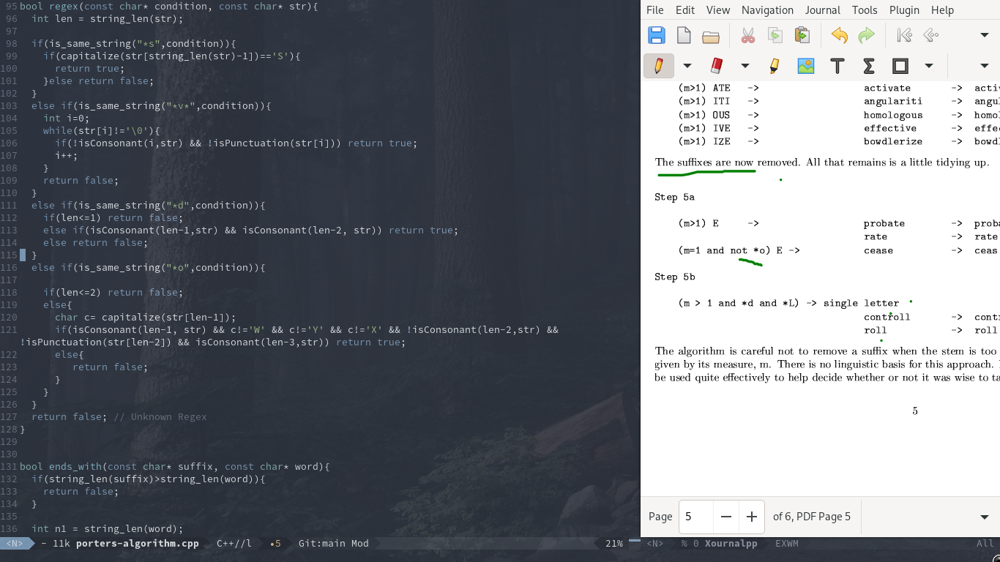

<2024-08-03 শনি>
 It is a good practice to install the latest version of emacs. Currently the latest available in apt is v27 but in snap, its v29. So we will install from snap.
sudo snap install emacs --classicThen simply put the contents of init.el in emacs.d. You can find the content of init.el at the bottom of the page.
Now set up the /usr/share/xsessions/exwm.desktop with the contents from here and also add the start-exwm.sh from here as well. Now you have setup your desktop environment! And tada, you are now good to go. Also install the following packages.
sudo apt install feh mpv compton xss-lock cmakeAfter opening EXWM, vlc-obs-brave browser etc. application will open but firefox may not open. In that case, simply execute the following command to update the dbus.
export DBUS_SESSION_BUS_ADDRESS="unix:path=$XDG_RUNTIME_DIR/bus"Optionally, download this really beautiful background image and put it in /usr/share/backgrounds folder.
The following is the init.el.
;; Set up package.el to work with MELPA
(require 'package)
(add-to-list 'package-archives
'("melpa" . "https://melpa.org/packages/"))
(package-initialize)
(package-refresh-contents)
;; Download Evil
(unless (package-installed-p 'evil)
(package-install 'evil))
;; Enable Evil
(require 'evil)
(evil-mode 1)
;; EXWM Installation
(require 'exwm)
(require 'exwm-config)
(exwm-config-example)
(load-theme 'deeper-blue)
(unless (package-installed-p 'company)
(package-install 'company))
;; Enable Company mode globally
(add-hook 'after-init-hook 'global-company-mode)
(require 'org)
(add-hook 'org-mode-hook
(lambda ()
(local-set-key (kbd "<tab>") 'org-cycle)))
(global-visual-line-mode t)
(defun my-org-collapse-all ()
"Collapse all headings in the current Org buffer."
(interactive)
(org-shifttab t))
(add-hook 'org-mode-hook 'my-org-collapse-all)
;; Centering text
(unless (package-installed-p 'visual-fill-column)
(package-install 'visual-fill-column))
(require 'visual-fill-column)
(visual-line-mode t)
(global-visual-fill-column-mode t)
(unless (package-installed-p 'ivy)
(package-install 'ivy))
(ivy-mode 1) ; Enable Ivy globally
;; Installing swiper
(unless (package-installed-p 'swiper)
(package-install 'swiper))
;; Optionally, you can customize the keybindings.
(global-set-key (kbd "C-s") 'swiper) ; Bind swiper to Ctrl + s
(global-set-key (kbd "C-r") 'swiper) ; Use Ctrl + r for reverse searching
(show-paren-mode t)
;; USE PACKAGE STARTS HERE
(use-package org-roam
:ensure t
:init
(setq org-roam-v2-ack t)
:custom
(org-roam-directory "~/Org-Roam-Files/")
:bind (("C-c n l" . org-roam-buffer-toggle)
("C-c n f" . org-roam-node-find)
("C-c n i" . org-roam-node-insert))
:config
(org-roam-setup))
(use-package vterm
:ensure t)
(use-package multi-vterm :ensure t)
(setq display-time-12hr-format nil)
(setq display-time-format "%H:%M - %d %B %Y")
(display-time-mode 1)
;; Retain history
(use-package smex
:ensure t)
(smex-initialize)
; Transparency
(set-frame-parameter (selected-frame) 'alpha `(90,90))
(add-to-list 'default-frame-alist `(alpha . (90, 90)))
(set-frame-parameter (selected-frame) 'fullscreen 'maximized)
(add-to-list 'default-frame-alist '(fullscreen . maximized))
;; Wallpaper
(defun efs/set-wallpaper ()
(interactive)
;; NOTE: You will need to update this to a valid background path!
(start-process-shell-command
"feh" nil "feh --bg-scale /usr/share/backgrounds/derrick-cooper-L505cPnmIds-unsplash.jpg"))
(efs/set-wallpaper)
{kind=link}